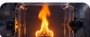
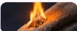
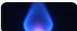

FLAME IN FREEFALL
Space Fire Safety Intelligence
Turn NASA microgravity combustion data into actionable fire safety insights for future Moon and Mars habitats.
NASA PSI Data
AI Research Analysis
Habitat Risk Prediction
19
PSI Studies
255.8 GB
Flight Data
4
Environments
AI
Research Co-Pilot
Orbital Intelligence
ISS (Current)
Alt: 408.4 km
Vel: 7.66 km/s
25.95° N, 81.08° E
Flame Behavior Visualization
Spherical Diffusion Flame (Microgravity)
Uniform, cooler, and soot-lean combustion.
Habitat Atmospheric Profile
O₂
21%
Pressure
14.7 psi
Ventilation
10–15 cm/s
Gravity
0.00001 g
ISS Condition — Nominal
Flammability Hazard Index
Moderate
Diffusion-limited spherical flames; cool flame re-ignition possible in low-O₂ zones.
NASA PSI Research Highlights

Flight Data
BASS-II
Burning & Suppression of Solids

Flight Data
SAFFIRE I–III
Spacecraft Fire Safety Demonstration

Flight Data
ACME: CFI-G
Coflow Flames in Partial Gravity
Flight Data
FLEX / CFI
Flame Extinguishment & Cool Flames
PYRO-SI Research Co-Pilot
Grounded Insight: In microgravity, flames form spherical blue shells without buoyant convection. In 34% O₂ lunar exploration atmospheres, low-speed ventilation accelerates flame spread significantly beyond Earth baseline rates.